수질환경기사 (2014-08-17 기출문제)
1과목: 수질오염개론
1. 25℃, 2기압의 압력에 있는 메탄가스 40kg을 저장하는데 필요한 탱크의 부피는? (단, 이상기체의 법칙, R = 0.082Lㆍatm/molㆍK 적용)
- 20.6m3
- 25.3m3
- 30.6m3
- 35.3m3
(정답률: 80%)

2. Glycine(C2H5O2N)이 호기성 조건하에서 CO2, H2O, NH3로 변화되고, 다시 NH3가 H2O, HNO3로 변화된다면 50g의 Glycine 이 CO2, H2O, HNO3로 변화될 때 이론적으로 소요되는 산소총량(g)은?
- 약 45
- 약 55
- 약 65
- 약 75
(정답률: 64%)
3. 원핵세포와 진핵세포에 관한 설명으로 옳지 않은 것은?
- 원핵세포는 핵막이 없고 진핵세포는 있다.
- 원핵세포의 세포소기관은 리보좀 70S로 진핵세포에 비해 크기가 작다.
- 모든 진핵세포가 가지고 있는 세포소기관은 미토콘드리아 이다.
- 미토콘드리아는 호흡대사와 ATP 생산 즉 에너지 생산기능을 수행한다.
(정답률: 71%)
4. 호수 내의 성층현상에 대한 설명으로 옳지 않은 것은?
- 여름성층의 연직 온도경사는 분자확산에 의한 DO구배와 같은 모양이다.
- 성층의 구분 중 약층(thermocline)은 수심에 따른 수온 변화가 적다.
- 겨울성층은 표층수 냉각에 의한 성층이어서 역성층이라고도 한다.
- 전도현상은 가을과 봄에 일어나며 수괴의 연직혼합이 왕성하다.
(정답률: 89%)
5. 호수의 수리특성을 고려하여 부영양화도와 인부하량과의 관계를 경험적으로 예측 평가하는 모델은?
- Streeter-phelps모델
- WASP모델
- Vollenweider모델
- DO-SAG모델
(정답률: 73%)
6. 유기화합물이 무기화합물과 다른 점으로 옳지 않은 내용은?
- 유기화합물들은 일반적으로 녹는점과 끓는점이 낮다.
- 유기화합물들은 하나의 분자식에 대하여 여러 종류의 화합물이 존재할 수 있다.
- 유기화합물들은 대체로 이온 반응보다는 분자반응을 하므로 반응속도가 빠르다.
- 대부분의 유기화합물은 박테리아의 먹이로 될 수 있다.
(정답률: 89%)
7. 적조에 의해 어패류가 폐사하는 원인과 가장 거리가 먼 것?
- 강한 독성을 갖는 편모류에 의한 적조 발생
- 고밀도로 존재하는 적조생물의 사후분해에 의해 다량의 용존산소가 소비
- 적조생물이 어패류의 아가미 등에 부착
- 다량의 적조생물 호흡에 의해 수중의 탄산염성분의 과다 배출
(정답률: 67%)
8. 20℃에서 k1이 0.16/day(base 10)이라 하면, 10℃에 대한 BOD5/BODu비는? (단, θ = 1.047)
- 0.63
- 0.69
- 0.73
- 0.76
(정답률: 72%)
9. 아세트산(CH3COOH) 3000mg/L 용액의 pH가 3.0이었다면 이 용액의 해리정수(Ka)는?
- 2×10-5
- 2×10-6
- 2×10-7
- 2×10-8
(정답률: 72%)
10. 어떤 도시에서 DO 0mg/L, BODu 200mg/L, 유량 1.0m3/sec, 온도 20℃의 하수를 유량 6m3/sec인 하천에 방류하고자 한다. 방류지점에서 몇 km 하류에서 가장 DO 농도가 작아지겠는가? (단, 하천의 온도 20℃, BODu 1mg/L, DO 9.2mg/L, 방류 후 혼합된 유량의 유속 3.6km/hr 이며 혼합수의 k1 = 0.1d, k2 = 0.2/d, 20℃에서 산소포화농도는 9.2 mg/L이다. 상용대수기준)
- 약 243
- 약 258
- 약 273
- 약 292
(정답률: 35%)
11. 글루코스(C6H12O6) 1000mg/L를 혐기성 분해 시킬 때 생산되는 이론적 메탄량(mg/L)은?
- 227
- 247
- 267
- 287
(정답률: 74%)
12. BOD 1kg의 제거에 보통 1kg의 산소가 필요하다면 1.45ton의 BOD가 유입된 하천에서 BOD를 완전히 제거하고자 할 때 요구되는 공기량은? (단, 물의 공기 흡수율은 7%(부피기준)이며, 공기 1m3은 0.236kg의 O2를 함유한다고 하고 하천의 BOD는 고려하지 않음)
- 약 84773m3 air
- 약 85773m3 air
- 약 86773m3 air
- 약 87773m3 air
(정답률: 64%)
13. 어떤 폐수의 BOD5가 300mg/ℓ, COD가 400mg/ℓ이었다. 이 폐수의 난분해성 COD(NBDCOD)는? (단, 탈산소계수, K1 = 0.01hr-1이다. 상용대수기준 BDCOD = BODu)
- 60mg/ℓ
- 70mg/ℓ
- 80mg/ℓ
- 90mg/ℓ
(정답률: 65%)
14. 유출유입량 5000m3/d, 저수량 500000m3인 호수에 A공장의 폐수가 일시적으로 방류되어 호수의 BOD가 100mg/L로 되었다. 이 호수의 BOD농도가 10mg/L로 저하되려면 얼마의 기간이 필요한가? (단, 공장폐수 외 BOD 유입은 없으며 호수는 완전혼합 반응조이다. 1차 반응, 정상상태 기준)
- 230일
- 250일
- 270일
- 290일
(정답률: 58%)
15. 어느 배양기의 제한기질농도(S)가 100 mg/L, 세포 비증식 계수 최대값(μmax)이 0.3hr일 때 Monod 식에 의한 세포 비증식계수(μ)는? (단, 제한기질 반포화농도(Ks) = 20mg/L)
- 0.21/hr
- 0.23/hr
- 0.25/hr
- 0.27/hr
(정답률: 71%)
16. 해수의 HOLY SEVEN에서 가장 농도가 낮은 것은?
- Cl-
- Mg2+
- Ca2+
- HCO3-
(정답률: 75%)
17. 수질분석결과 Na+ = 10 mg/L, Ca2+ = 20 mg/L, Mg2+ = 24 mg/L, Sr2+ = 2.2 mg/L 일 때 총경도는? (단, Na : 23, Ca : 40, Mg : 24, Sr : 87.6)
- 112.5mg/L as CaCO3
- 132.5mg/L as CaCO3
- 152.5mg/L as CaCO3
- 172.5mg/L as CaCO3
(정답률: 70%)
18. 전자쌍을 받는 화학종을 산, 전자쌍을 주는 화학종을 염기라고 정의하고 있는 것은?
- Arrhenius의 정의
- Bronsted-Lowry의 정의
- Lewis의 정의
- Graham의 정의
(정답률: 76%)
19. 물의 물리적 특성으로 옳지 않은 것은?
- 물의 표면장력이 낮을수록 세탁물의 세정효과가 증가한다.
- 물이 얼게 되면 액체상태보다 밀도가 커진다.
- 물의 융해열은 다른 액체보다 높은 편이다.
- 물의 여러 가지 특성은 물분자의 수소결합 때문에 나타나는 것이다.
(정답률: 79%)
20. 어느 시료의 대장균수가 5000/mL라면 대장균수가 20/mL가 될 때까지 소요되는 시간은? (단, 일차반응기준, 대장균의 반감기는 2시간)
- 약 16hr
- 약 18hr
- 약 20 hr
- 약 22hr
(정답률: 64%)
2과목: 상하수도계획
21. 다음은 상수의 소독(살균)설비 중 저장설비에 관한 내용이다. ( )안에 가장 적합한 것은?
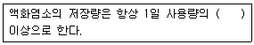
- 5일분
- 10일분
- 15일분
- 30일분
(정답률: 68%)
22. 하수관거 설계시 오수관거의 최소관경에 관한 기준은?
- 150mm를 표준으로 한다.
- 200mm를 표준으로 한다.
- 250mm를 표준으로 한다.
- 300mm를 표준으로 한다.
(정답률: 79%)
23. 하수처리수 재이용 시설계획으로 옳은 것은?
- 재이용수 공급관거는 계획일최대유량을 기준으로 계획한다.
- 재이용수 공급관거는 계획시간최대유량을 기준으로 계획한다.
- 재이용수 공급관거는 계획일평균유량을 기준으로 계획한다.
- 재이용수 공급관거는 계획시간평균유량을 기준으로 계획한다.
(정답률: 56%)
24. 도수시설인 도수관로의 매설깊이에 관한 기준으로 옳은 것은? (단, 도로하중은 고려함)
- 관종 등에 따라 다르지만 일반적으로 관경 900mm 이하 관로의 매설깊이는 30cm 이상으로 한다.
- 관종 등에 따라 다르지만 일반적으로 관경 900mm 이하 관로의 매설깊이는 60cm 이상으로 한다.
- 관종 등에 따라 다르지만 일반적으로 관경 1000mm 이상 관로의 매설깊이는 150cm 이상으로 한다.
- 관종 등에 따라 다르지만 일반적으로 관경 1000mm 이상 관로의 매설깊이는 200cm 이상으로 한다.
(정답률: 58%)
25. 전식의 위험이 있는 철도 가까이에 금속관을 매설하는 경우, 금속관을 매설하는 측의 대책(전식방지방법)으로 옳지 않은 것은?
- 이음부의 절연화
- 강제배류법
- 내부전원법
- 유전양극법(또는 희생양극법)
(정답률: 58%)
26. 계획취수량이 10m3/s, 유입수심이 5m, 유입속도가 0.4m/s인 지역에 취수구를 설치하고자 할 때 취수구의 폭(B)는? (단, 취수보 설계 기준)
- 0.5m
- 1.25m
- 2.5m
- 5.0m
(정답률: 67%)
27. 빗물펌프장의 계획우수량 결정을 위해 원칙적으로 적용되는 확률년수의 기준은?
- 20~30년
- 20~40년
- 30~40년
- 30~50년
(정답률: 72%)
28. 정수시설인 고속응집침전지를 선택할 때에 고려하여야 하는 조건과 구조 기준으로 틀린 것은?
- 원수 탁도는 10 NTU 이상이어야 한다.
- 용량은 계획정수량의 1.5~2.0시간분으로 한다.
- 최고 탁도는 1000 NTU 이하인 것이 바람직하다.
- 표면부하율은 60~120mm/min을 표준으로 한다.
(정답률: 44%)
29. 정수처리시설인 응집지 내의 플록형성지에 관한 설명 중 틀린 것은?
- 플록형성지는 혼화지와 침전지 사이에 위치하고 침전지에 붙여서 설치한다.
- 플록형성은 응집된 미소플록을 크게 성장시키기 위해 적당한 기계식교반이나 우류식교반이 필요하다.
- 플록형성지 내의 교반강도는 하류로 갈수록 점차 증가시키는 것이 바람직하다.
- 플록형성지는 단락류나 정체부가 생기지 않으면서 충분하게 교반될 수 있는 구조로 한다.
(정답률: 78%)
30. 상수처리를 위한 침사지 구조에 관한 기준으로 옳지 않은 것은?
- 지의 상단높이는 고수위보다 0.3~0.6m의 여유고를 둔다.
- 지내 평균유속은 2~7cm/s를 표준으로 한다.
- 표면부하율은 200~500mm/min을 표준으로 한다.
- 지의 유효수심은 3~4m를 표준으로 하고 퇴사심도를 0.5~1m로 한다.
(정답률: 73%)
31. 하수도계획의 목표연도로 옳은 것은?
- 원칙적으로 10년으로 한다.
- 원칙적으로 15년으로 한다.
- 원칙적으로 20년으로 한다.
- 원칙적으로 25년으로 한다.
(정답률: 82%)
32. '계획오수량'에 관한 설명으로 옳지 않은 것은?
- 합류식에서 우천시 계획오수량은 원칙적으로 계획 시간 최대오수량의 3배 이상으로 한다.
- 계획 시간 최대오수량은 계획 1일 최대 오수량의 1시간 당 수량의 1.3~1.8배를 표준으로 한다.
- 계획 1일 평균오수량은 계획 1일 최대오수량의 60~70%를 표준으로 한다.
- 지하수량은 1인 1일 최대오수량의 10~20%로 한다.
(정답률: 64%)
33. 막여과법을 정수처리에 적용하는 주된 선정 이유로 옳지 않은 것은?
- 응집제를 사용하지 않거나 또는 적게 사용한다.
- 막의 특성에 따라 원수 중의 현탁물질, 콜로이드, 세균류, 크립토스포리디움 등 일정한 크기 이상의 불순물을 제거할 수 있다.
- 부지면적이 종래보다 적을 뿐 아니라 시설의 건설공사 기간도 짧다.
- 막의 교환이나 세척 없이 반영구적으로 자동운전이 가능하여 유지관리 측면에서 에너지를 절약할 수 있다.
(정답률: 71%)
34. 상수처리를 위한 정수시설인 급속여과지에 관한 설명으로 틀린 것은?
- 여과속도는 120~150m/d를 표준으로 한다.
- 플록의 질이 일정한 것으로 가정하였을 때 여과층의 필요두께는 질이 일정한 것으로 가정하였을 때 여과층의 필요두께는 여재입경에 반비례한다.
- 균등계수가 1에 가까울수록 탁질억류가능량은 증가한다.
- 세립자의 여과모래를 사용할수록 플록 저지율은 높지만, 표면여과의 경향이 강해진다.
(정답률: 56%)
35. 하수관거의 단면형상이 계란형인 경우에 관한 설명으로 가장 거리가 먼 것은?
- 유량이 적은 경우 원형거에 비해 수리학적으로 유리하다.
- 수직방향의 시공에 정확도가 요구되므로 면밀한 시공이 필요하다.
- 재질에 따라 제조비가 늘어나는 경우가 있다.
- 원형거에 비해 관폭이 커도 되므로 수평방향의 토압에 유리하다.
(정답률: 66%)
36. 상수처리를 위한 용존공기부상 공정 중 플록형성지에 관한 설명으로 틀린 것은?
- 플록형성지는 2지 이상으로 구분한다.
- 플록형성지 유출부에 수평면에 대하여 60~70° 인 경사 저류벽을 설치한다.
- 플록형성지 폭은 부상지의 폭과 같도록 하며 10m 정도로 한다.
- 교반시간 즉 체류시간은 일반적으로 3~5분 정도이다.
(정답률: 61%)
37. 복류수나 자유수면을 갖는 지하수를 취수하기 위한 집수매거에 관한 내용으로 틀린 것은?
- 일반적으로 집수매거는 복류수의 흐름방향에 대하여 평행으로 설치하는 것이 효율적이다.
- 가능한 한 직접 지표수의 영향을 받지 않도록 하기 위하여 매설깊이는 5m 이상으로 하는 것이 바람직하다.
- 집수매거의 길이는 시험우물 등에 의한 양수시험 결과에 따라 정한다.
- 철근콘크리트조의 유공관 또는 권선형 스크린관을 표준으로 한다.
(정답률: 66%)
38. 회전수 20회/sec, 토출량 23m3/min, 전양정 8m의 터어빈 펌프의 비속도는?
- 약 610
- 약 810
- 약 1210
- 약 1610
(정답률: 67%)
39. 해수담수화방식 중 상(相)변화방식인 증발법에 해당되는 것은?
- 가스수화물법
- 다중효용법
- 냉동법
- 전기투석법
(정답률: 52%)
40. 계획취수량을 확보하기 위하여 필요한 저수용량의 결정에 사용하는 계획 기준년은?
- 원칙적으로 5개년에 제1위 정도의 갈수를 표준으로 한다.
- 원칙적으로 7개년에 제1위 정도의 갈수롤 표준으로 한다.
- 원칙적으로 10개년에 제1위 정도의 갈수를 표준으로 한다.
- 원칙적으로 15개년에 제1위 정도의 갈수를 표준으로 한다.
(정답률: 78%)
3과목: 수질오염방지기술
41. 역삼투 장치로 하루에 200000L의 3차 처리된 유출수를 탈염시키고자 한다. 25℃에서 물질전달계수 = 0.2068L/(d-m2)(kPa), 유입수와 유출수 사이의 압력차는 2400kPa, 유입수와 유출수 사이의 삼투압차는 310kPa, 최저운전 온도는 10℃, A10℃ = 1.58A25℃라면 요구되는 막 면적은?
- 약 730m2
- 약 830m2
- 약 930m2
- 약 1030m2
(정답률: 60%)
42. 1차 침전지의 유입 유량은 1000m3/day이고 SS농도는 350mg/L이다. 1차 침전지에서의 SS 제거효율이 60%일 때 하루에 1차 침전지에서 발생되는 슬러지 부피(m3)는? (단, 슬러지의 비중은 1.⑤, 함수율은 94%, 기타 조건은 고려하지 않음)
- 2.3m3
- 2.5m3
- 2.7m3
- 3.3m3
(정답률: 47%)
43. 질산화 반응에 관한 내용으로 옳은 것은?
- 질산균의 에너지원은 유기물이다.
- 질산균의 증식속도는 활성슬러지 내 미생물보다 빠르다.
- 질산균의 질산화 반응시 알칼리도가 생성된다.
- 질산균의 질산화 반응시 용존산소는 2mg/L 이상이어야 한다.
(정답률: 56%)
44. CFSTR에서 물질을 분해하여 효율 95 %로 처리하고자 한다. 이 물질은 0.5차 반응으로 분해되며, 속도상수는 0.⑤ (mg/L)1/2/h이다. 유량은 500L/h이고 유입농도는 250mg/L로서 일정하다면 CFSTR의 필요 부피는? (단, 정상상태 가정)
- 약 520m3
- 약 570m3
- 약 620m3
- 약 670m3
(정답률: 43%)
45. 하수내 함유된 유기물질뿐 아니라 영양물질까지 제거하기 위하여 개발된 A2/O공법에 관한 설명으로 틀린 것은?
- 인과 질소를 동시에 제거할 수 있다.
- 혐기조에서는 인의 방출이 일어난다.
- 폐 sludge내의 인함량은 비교적 높아서(3~5%) 비료의 가치가 있다.
- 무산소조에서는 인의 과잉섭취가 일어난다.
(정답률: 70%)
46. BOD 250mg/L 인 폐수를 살수 여상법으로 처리할 때 처리수의 BOD는 80 mg/L 이었고 이때의 온도가 20℃였다. 만일 온도가 23℃로 된다면 처리수의 BOD 농도는? (단, 온도 이외의 처리조건은 같고, E : 처리효율, E1 = E20×CiT-20, Ci = 1.035임)
- 약 46mg/L
- 약 53mg/L
- 약 62mg/L
- 약 71mg/L
(정답률: 50%)
47. 건조된 슬러지 무게의 1/5 이 유기물질, 4/5 가 무기물질이며 건조전 슬러지 함수율은 90%, 유기물질 비중은 1.0, 무기물질 비중이 2.5라면 건조전 슬러지 전체의 비중은?
- 1.031
- 1.041
- 1.⑤1
- 1.061
(정답률: 49%)
48. 직경이 다른 두 개의 원형입자를 동시에 20℃의 물에 떨어뜨려 침강실험을 했다. 입자 A의 직경은 2×10-2cm이며 입자 B의 직경은 5×10-2cm라면 입자 A와 입자 B의 침강속도의 비율(VA/VB)은? (단, 입자 A와 B의 비중은 같으며, stokes 공식을 적용, 기타 조건은 같음)
- 0.28
- 0.23
- 0.16
- 0.12
(정답률: 61%)
49. 회분식 반응조를 일차반응의 조건으로 설계하고, A성분의 제거 또는 전환율이 95%가 되게 하고자 한다. 만일, 반응 속도상수 K가 0.40/hr 이면 이 회분식 반응조의 체류(반응)시간은?
- 약 4.7hr
- 약 5.8hr
- 약 6.4hr
- 약 7.5hr
(정답률: 50%)
50. Chick's law에 의하면 염소소독에 의한 미생물 사멸율은 1차 반응에 따른다고 한다. 미생물의 80%가 0.1mg/ℓ 잔류 염소로 2분 내에 사멸된다면 99.9%를 사멸시키기 위해서 요구되는 접촉시간은?
- 5.7분
- 8.6분
- 12.7분
- 14.2분
(정답률: 55%)
51. 수면부하율(또는 표면부하율)이 75m3/m2-d인 침전지에서 100% 제거될 수 있는 입자의 직경은 얼마 이상부터인가? (단, 폐수와 입자의 비중은 각각 1.0과 1.35이며 폐수의 점성계수는 0.098kg/mㆍs이고, 입자의 침전은 stokes공식을 따른다.
- 0.37mm 이상
- 0.47m 이상
- 0.57mm 이상
- 0.67mm 이상
(정답률: 38%)
52. 하수처리를 위한 회전 원판법에 관한 설명으로 틀린 것은?
- 질산화가 일어나기 쉬우며 pH가 저하되는 경우가 있다.
- 원판의 회전으로 인해 부착생물과 회전판 사이에 전단력이 생긴다.
- 살수여상과 같이 여상에 파리는 발생하지 않으나 하루살이가 발생하는 수가 있다.
- 활성슬러지법에 비해 이차침전지 SS 유출이 적어 처리수의 투명도가 좋다.
(정답률: 65%)
53. 함수율 96%인 생분뇨가 분뇨처리장에 150m3/day의 율로 투입되고 있다. 이 분뇨에는 휘발성 고형물(VS)이 총 고형물(TS)의 50%이고, VS의 60%가 소화가스로 발생되었다. VS 1kg 당 0.5m3의 소화가스가 발생 되었다면, 분뇨의 소화가스 총발생량(m3/day)은? (단, 분뇨의 비중은 1로 한다.)
- 700m3/day
- 900m3/day
- 1100m3/day
- 1300m3/day
(정답률: 45%)
54. 슬러지 함수율이 90%인 슬러지 15m3/hr를 가압 탈수기로 탈수하고자 할 때 탈수기의 소요 면적(m2)은? (단, 비중은 1.0 기준, 탈수기의 탈수 속도는 3kg(건조 고형물)/m2ㆍhr 이다.)
- 400
- 450
- 500
- 550
(정답률: 45%)
55. Langmuir 등온 흡착식을 유도하기 위한 가정으로 옳지 않은 것은?
- 한정된 표면만이 흡착에 이용된다.
- 표면에 흡착된 용질물질은 그 두께가 분자 한 개 정도의 두께이다.
- 흡착은 비가역적이다.
- 평형조건이 이루어졌다.
(정답률: 68%)
56. 2차 처리 유출수에 포함된 25mg/ℓ의 유기물을 분말 활성탄 흡착법으로 3차 처리하여 2mg/ℓ 될 때까지 제거하고자 할 때 폐수 3m3 당 몇 g의 활성탄이 필요한가? (단, 오염물질의 흡착량과 흡착제거량과의 관계는 Freundlich 등온식에 따르며 k = 0.5, n = 1 이다.)
- 69g
- 76g
- 84g
- 91g
(정답률: 29%)
57. 폐수처리장의 완속교반기 동력을 부피 1000m3인 탱크에서 G값을 50/s를 적용하여 설계하고자 한다면 이론적으로 소요되는 동력은? (단, 폐수의 점도는 1.139×10-3Nㆍs/m2)
- 약 2.15kW
- 약 2.45kW
- 약 2.85kW
- 약 3.25kW
(정답률: 57%)
58. 폭기조 내 MLSS 농도가 4000mg/L이고 슬러지 반송률이 55%인 경우 이 활성슬러지의 SVI는? (단, 유입수 SS 고려하지 않음)
- 69
- 79
- 89
- 99
(정답률: 53%)
59. 분리막을 이용한 다음의 폐수처리방법 중 구동력이 농도차에 의한 것은?
- 역삼투(Reverse Osmosis)
- 투석(Dialysis)
- 한외여과(UItrafiltration)
- 정밀여과(Microfiltration)
(정답률: 72%)
60. 일반적인 양이온 교환물질에 있어 일반적인 양이온에 대한 선택성의 순서로 가장 적합한 것은?
- Ba+2＞Pb+2＞Sr+2＞Ni+2＞Ca+2
- Ba+2＞Pb+2＞Ca+2＞Ni+2＞Sr+2
- Ba+2＞Pb+2＞Ca+2＞Sr+2＞Ni+2
- Ba+2＞Pb+2＞Sr+2＞Ca+2＞Ni+2
(정답률: 51%)
4과목: 수질오염공정시험기준
61. 식물성 플랑크톤을 현미경계수법으로 측정할 때 저배율 방법(200배율 이하) 적용에 관한 내용으로 틀린 것은?
- 세즈윅-라프터 챔버는 조작은 어려우나 재현성이 높아서 중배율 이상에서도 관찰이 용이하여 미소 플랑크톤의 검경에 적절하다.
- 시료를 챔버에 채울 때 피펫은 입구가 넓은 것을 사용하는 것이 좋다.
- 계수 시 스트립을 이용할 경우, 양쪽 경계면에 걸린 개체는 하나의 경계면에 대해서만 계수한다.
- 계수 시 격자의 경우 격자 경계면에 걸린 개체는 4면 중 2면에 걸린 개체는 계수하고 나머지 2면에 들어온 개체는 계수하지 않는다.
(정답률: 48%)
62. 복수시료채취방법에 대한 설명으로 옳은 것은? (단, 배출허용기준 적합여부 판정을 위한 시료채취 시)
- 자동시료채취기로 시료를 채취할 경우에는 6시간 이내에 30분 이상 간격으로 2회 이상 채취하여 일정량의 단일 시료로 한다.
- 자동시료채취기로 시료를 채취할 경우에는 6시간 이내에 30분 이상 간격으로 4회 이상 채취하여 일정량의 단일 시료로 한다.
- 자동시료채취기로 시료를 채취할 경우에는 8시간 이내에 30분 이상 간격으로 2회 이상 채취하여 일정량의 단일 시료로 한다.
- 자동시료채취기로 시료를 채취할 경우에는 8시간 이내에 30분 이상 간격으로 4회 이상 채취하여 일정량의 단일 시료로 한다.
(정답률: 71%)
63. 시료 채취시 유의사항으로 틀린 것은?
- 채취 용기는 시료를 채우기 전에 시료로 3회 이상 씻은 다음 사용한다.
- 시료 채취 용기에 시료를 채울 때에는 어떠한 경우에도 시료의 교란이 일어나서는 안 된다.
- 지하수 시료는 취수정 내에 고여 있는 물과 원래 지하수의 성상이 달라질 수 있으므로 고여 있는 물을 충분히 퍼낸 다음 새로 나온 물을 채취한다.
- 시료 채취량은 시험항목 및 시험 횟수의 필요량의 3~5배 채취를 원칙으로 한다.
(정답률: 69%)
64. 냄새 측정을 위한 시료의 최대보존기간은?
- 즉시
- 6시간
- 24시간
- 48시간
(정답률: 61%)
65. 개수로에 의한 유량 측정시 수로의 구성, 재질, 형상, 기울기 등이 일정하지 않은 경우에 관한 설명으로 틀린 것은?
- 수로는 될수록 직선적이며, 수면이 물결치지 않는 곳을 고른다.
- 10m를 측정구간으로 하여 5m마다 유수의 횡단면적을 측정한다.
- 유속의 측정은 부표를 사용하여 10m 구간을 흐르는데 걸리는 시간을 스톱워치(Stop Watch)로 잰다.
- 수로의 수량은 Q = 60VㆍA, V = 0.75Ve로 한다. (Q : 유량[m3/분], V : 총평균 유속[m/s], Ve : 표면 최대 유속[m/s], A : 평균단면적[m2])
(정답률: 60%)
66. 다음은 인산염인(자외선/가시선 분광법 - 아스코빈산환원법) 측정방법에 관한 내용이다. ( )안에 옳은 내용은?
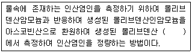
- 적색의 흡광도를 460nm
- 적색의 흡광도를 540nm
- 청의 흡광도를 660nm
- 청의 흡광도를 880nm
(정답률: 50%)
67. 다음은 총 유기탄소 시험에 적용되는 용어의 정의이다. ( )안에 내용으로 옳은 것은?
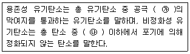
- ㉮ 0.35μm, ㉯ pH 2
- ㉮ 0.35μm, ㉯ pH 4
- ㉮ 0.45μm, ㉯ pH 2
- ㉮ 0.45μm, ㉯ pH 4
(정답률: 48%)
68. 물벼룩을 이용한 급성 독성 시험법에 적용되는 용어 정의로 옳지 않은 것은?
- 치사 : 일정 비율로 준비된 시료에 물벼룩을 투입하고 24시간 경과 후 시험용기를 살며시 움직여주고, 15초 후 관찰했을 때 아무 반응이 없는 경우를 치사라 판정한다.
- 유영저해 : 독성물질에 의해 영향을 받아 일부 기관(촉각, 후복부 등)의 움직임이 없을 경우를 유영저해로 판정한다. 이때 촉수를 움직인다 하더라도 유영을 하지 못한다면 유영저해로 판정한다.
- 반수영향농도 : 투입 시험생물의 50%가 치사 혹은 유영저해를 나타낸 농도이다.
- 생태독성값 : 통계적 방법을 이용하여 계산한 반수영향농도에 생체축적정도를 반영한 값이다.
(정답률: 47%)
69. 메틸렌블루와 반응하여 생성된 청색의 착화합물을 클로로폼으로 추출하여 흡광도를 650nm에서 측정하여 정량하는 수질오염물질은? (단, 자외선/가시선 분광법 기준)
- 음이온 계면활성제
- 유기인
- 인산염인
- 폴리클로리네이티드 비페닐
(정답률: 63%)
70. 분석시 다음 그림의 장치가 필요한 항목은?
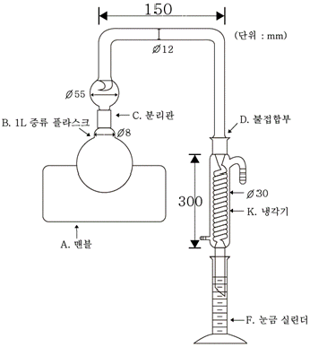
- 페놀류
- 색도
- 총유기탄소
- 클로로필 a
(정답률: 50%)
71. 사각 웨어에 의하여 유량을 측정하려고 한다. 웨어의 수두가 90cm, 절단 폭이 5m이면 이 사각 웨어의 유량은 몇 m3/min인가? (단, 유량 계수는 1.5이다.)
- 5.2
- 5.6
- 6.0
- 6.4
(정답률: 49%)
72. 측정항목별 시료보전방법과 최대보존기간을 옳게 짝지은 것은?
- 부유물질 : 4℃ 보관, 28일
- 전기전도도 : 4℃ 보관, 즉시
- 음이온계면활성제 : 4℃ 보관, 48시간
- 질산성질소 : 4℃ 보관, 6시간
(정답률: 50%)
73. 다음은 비소-수소화물생성-원자흡수분광광도법에 관한 내용이다. ( )안에 옳은 내용은?
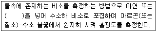
- 다이에틸디티오카비민산은수화물
- 염화제이철수화물
- 요오드화칼륨수화물
- 나트륨붕소수화물
(정답률: 36%)
74. 자외선/가시선 분광법에 의한 페놀류의 측정원리를 설명한 내용 중 옳지 않은 것은?
- 수용액에서는 510mm에서 흡광도를 측정한다.
- 클로로폼용액에서는 460nm에서 흡광도를 측정한다.
- 추출법의 정량한계는 0.1mg/L 이다.
- 황 화합물의 간섭이 있는 경우 인산(H3PO4)이 사용된다.
(정답률: 62%)
75. 총칙에 관한 설명으로 가장 거리가 먼 것은?
- 시험에 사용하는 시약은 따로 규정이 없는 한 1급 이상 또는 이와 동등한 규격의 시약을 사용한다.
- “항량으로 될 때까지 건조한다”라는 의미는 같은 조건에서 1시간 더 건조할 때 전후 무게의 차가 g당 0.3mg 이하일 때를 말한다.
- 기체 중의 농도는 표준상태(0℃, 1기압)로 환산 표시한다.
- “정확히 취하여”라 하는 것은 규정한 양의 시료를 부피피렛으로 0.1mL까지 취하는 것을 말한다.
(정답률: 62%)
76. 잔류염소(비색법) 측정할 때 크롬산(2mg/L 이상)으로 인한 종말점 간섭을 방지하기 위해 가하는 시약은?
- 염화바륨
- 황산구리
- 염산용액(25%)
- 과망간산칼륨
(정답률: 49%)
77. 취급 또는 저장하는 동안에 기체 또는 미생물이 침입하지 아니하도록 내용물을 보호하는 용기는?
- 밀봉용기
- 밀폐용기
- 기밀용기
- 차폐용기
(정답률: 47%)
78. 수질의 색도 측정에서 이용되는 색도표준원액 제조에 사용되는 시약이 아닌 것은?
- 육염화백금칼륨
- 염화코발트6수화물
- 염화아연분말
- 염산
(정답률: 36%)
79. 다음은 용기에 의한 유량 측정에 관한 내용이다. ( )안에 옳은 내용은?
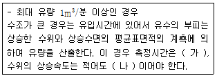
- 가 : 1분 정도, 나 : 매분 1cm 이상
- 가 : 1분 정도, 나 : 매분 5cm 이상
- 가 : 5분 정도, 나 : 매분 1cm 이상
- 가 : 5분 정도, 나 : 매분 5cm 이상
(정답률: 60%)
80. 총질소의 측정방법과 가장 거리가 먼 것은?
- 자외선/가시선 분광법(산화법)
- 자외선/가시선 분광법(카드뮴-구리 환원법)
- 자외선/가시선 분광법(연속흐름법)
- 자외선/가시선 분광법(환원증류-킬달법)
(정답률: 47%)
5과목: 수질환경관계법규
81. 수질오염감시경보의 발령, 해제 기준에 관한 내용으로 옳은 것은?
- 생물감시장비 중 물벼룩감시장비가 경보기준을 초과하는 것은 한쪽 시험조에서 15분 이상 지속되는 경우를 말함
- 생물감시장비 중 물벼룩감시장비가 경보기준을 초과하는 것은 한쪽 시험조에서 30분 이상 지속되는 경우를 말함
- 생물감시장비 중 물벼룩감시장비가 경보기준을 초과하는 것은 양쪽 모든 시험조에서 15분 이상 지속되는 경우를 말함
- 생물감시장비 중 물벼룩감시장비가 경보기준을 초과하는 것은 양쪽 모두 시험조에서 30분 이상 지속되는 경우를 말함
(정답률: 47%)
82. 시ㆍ도지사가 측정망을 이용하여 수질오염도를 상시 측정하거나 수생태계 현황을 조사한 경우에 그 조사 결과를 몇 일 이내에 환경부장관에게 보고하여야 하는가?
- 수질오염도 : 측정일이 속하는 달의 다음 달 5일 이내, 수생태계 현황 : 조사 종료일로부터 1개월 이내
- 수질오염도 : 측정일이 속하는 달의 다음 달 5일 이내, 수생태계 현황 : 조사 종료일로부터 3개월 이내
- 수질오염도 : 측정일이 속하는 달의 다음 달 10일 이내, 수생태계 현황 : 조사 종류일로부터 1개월 이내
- 수질오염도 : 측정일이 속하는 달의 다음 달 10일 이내, 수생태계 현황 : 조사 종료일로부터 3개월 이내
(정답률: 52%)
83. 수질오염경보(조류경보) 발령 단계 중 조류경보시 취수장ㆍ정수장 관리자의 조치사항은?
- 주 2회 이상 시료채취ㆍ분석
- 정수의 독소분석 실시
- 발령기관에 대한 시험분석결과의 신속한 통보
- 취수구 및 조류가 심한 지역에 대한 방어막 설치 등 조류 제거 조치 실시
(정답률: 42%)
84. 수질오염경보(조류경보) 단계 중 다음 발령기준에 해당하는 단계는?(관련 규정 개정전 문제로 여기서는 기존 정답인 2번을 누르면 정답 처리됩니다. 자세한 내용은 해설을 참고하세요.)
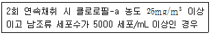
- 조류관심
- 조류경보
- 조류경계
- 조류심각
(정답률: 41%)
85. 다음은 폐수처리업자의 준수사항에 관한 설명이다. ( )안에 내용으로 옳은 것은?
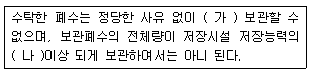
- 가 : 10일 이상, 나 : 80%
- 가 : 10일 이상, 나 : 90%
- 가 : 30일 이상, 나 : 80%
- 가 : 30일 이상, 나 : 90%
(정답률: 62%)
86. 중점관리 저수지의 지정 기준으로 옳은 것은?
- 총저수 용량이 1백만세제곱미터 이상인 저수지
- 총저수 용량이 1천만세제곱미터 이상인 저수지
- 총저수 면적이 1백만제곱미터 이상인 저수지
- 총저수 면적이 1천만제곱미터 이상인 저수지
(정답률: 53%)
87. 대통령령이 정하는 처리용량 이상의 방지시설(공동방지시설 포함)을 운영하는 자는 배출되는 수질오염물질이 배출허용기준, 방류수 수질기준에 맞는지를 확인하기 위하여 적산전력계 또는 적산유량계 등 대통령령이 정하는 측정기기를 부착하여야 한다. 이를 위반하여 적산전력계 또는 적산유량계를 부착하지 아니한 자에 대한 벌칙 기준은?
- 1000만원 이하의 벌금
- 500만원 이하의 벌금
- 300만원 이하의 벌금
- 100만원 이하의 벌금
(정답률: 43%)
88. 다음은 배출시설의 설치허가를 받은 자가 배출시설의 변경허가를 받아야 하는 경우에 대한 기준이다. ( )안에 내용으로 옳은 것은?
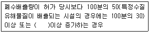
- 1일 500세제곱미터
- 1일 600세제곱미터
- 1일 700세제곱미터
- 1일 800세제곱미터
(정답률: 61%)
89. 골프장의 잔디 및 수목 등에 맹ㆍ고독성 농약을 사용한 자에 대한 벌금 또는 과태료 부과 기준은?
- 3백만원 이하의 벌금
- 5백만원 이하의 벌금
- 1천만원 이하의 과태료
- 3백만원 이하의 과태료
(정답률: 55%)
90. 수질오염방지시설 중 화학적 처리시설에 속하는 것은?
- 응집시설
- 접촉조
- 폭기시설
- 살균시설
(정답률: 64%)
91. 다음은 폐수종말처리시설의 유지ㆍ관리기준에 관한 사항이다. ( )안에 옳은 내용은?
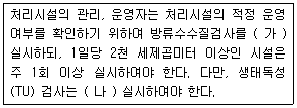
- 가 : 월 2회 이상, 나 : 월 1회 이상
- 가 : 월 1회 이상, 나 : 월 2회 이상
- 가 : 월 2회 이상, 나 : 월 2회 이상
- 가 : 월 1회 이상, 나 : 월 1회 이상
(정답률: 65%)
92. 오염총량관리시행계획에 포함되어야 하는 사항과 가장 거리가 먼 것은?
- 오염원 현황 및 예측
- 오염도 조사 및 오염부하량 산정방법
- 연차별 오염부하량 삭감목표 및 구체적 삭감 방안
- 수질 예측 산정자료 및 이행 모니터링 계획
(정답률: 39%)
93. 다음의 비점오염저감시설 중 자연형 시설에 해당되는 것은?
- 생물학적 처리형 시설
- 여과시설
- 침투시설
- 와류시설
(정답률: 58%)
94. 폐수처리업의 등록기준에 관한 내용으로 틀린 것은?
- 하나의 시설 또는 장비가 두 가지 이상의 기능을 가질 경우에는 각각의 해당 시설 또는 장비를 갖춘 것으로 본다.
- 폐수수탁처리업, 폐수재이용업을 함께 하려는 때에는 같은 요건이라도 업종별로 따로 갖추어야 한다.
- 수질오염물질 각 항목을 측정, 분석할 수 있는 실험기기, 기구 및 시약을 보유한 측정대행업자 또는 대학부설 연구기고나 등과 측정대행계약 또는 공동사용계약을 체결한 경우에는 해당 실험기기, 기구 및 시약을 갖추지 아니할 수 있다.
- 기술능력이 환경기술인의 자격요견 이상이고 폐수 처리 시설과 폐수배출시설이 동일한 시설인 경우에는 환경기술인을 중복하여 임명하지 아니하여도 된다.
(정답률: 51%)
95. 환경부장관이 수질 및 수생태계를 보전할 필요가 있다고 지점, 고시하고 수질 및 수생태계를 정기적으로 조사, 측정하여야 하는 호소의 기준으로 틀린 것은?
- 1일 30만톤 이상의 원수를 취수하는 호소
- 안수위일 때 면적이 50만 제곱미터 이상인 호소
- 수질오염이 심하여 특별한 관리가 필요하다고 인정되는 호소
- 동식물의 서식지, 도래지이거나 생물다양성이 풍부하여 특별히 보전할 필요가 있다고 인정되는 호소
(정답률: 49%)
96. 다음은 수변생태구역의 매수ㆍ조성 등에 관한 내용이다. ( )안에 내용으로 옳은 것은?
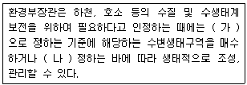
- 가 : 환경부령, 나 : 대통령령
- 가 : 대통령령, 나 : 환경부령
- 가 : 환경부령, 나 : 국무총리령
- 가 : 국무총리령, 나 : 환경부령
(정답률: 59%)
97. 수질 및 수생태계 상태를 등급으로 나타내는 경우, “좋음” 등급에 대한 설명으로 가장 옳은 것은? (단, 수질 및 수생태계 하천의 생활 환경기준)
- 용존산소가 풍부하고 오염물질이 거의 없는 청정 상태에 근접한 상태계로 침전 등 간단한 정수처리 후 생활용수로 사용할 수 있음
- 용존산소가 풍부하고 오염물질이 거의 없는 청정 상태에 근접한 생태계로 여과ㆍ침전 등 간단한 정수처리 후 생활용수로 사용할 수 있음
- 용존산소가 많은 편이고 오염물질이 거의 없는 청정 상태에 근접한 생태계로 여과ㆍ침전ㆍ살균 등 일반적인 정수처리 후 생활용수로 사용할 수 있음
- 용존산소가 많은 편이고 오염물질이 거의 없는 청정상태에 근접한 생태계로 활성탄 투입 등 일반적인 정수처리 후 생활용수로 사용할 수 있음
(정답률: 53%)
98. 비점오염원의 설치신고 또는 변경신고를 할 때 제출하는 비점오염저감 계획서에 포함되어야 하는 사항과 가장 거리가 먼 것은?
- 비점오염원 관련 현황
- 비점오염 저감시설 설치계획
- 비점오염원 관리 및 모니터링 방안
- 비점오염원 저감방안
(정답률: 52%)
99. 1일 폐수배출량이 2000m3미만인 규모의 지역별, 항목별 배출허용기준으로 틀린 것은?(관련 규정 개정전 문제로 여기서는 기존 정답인 1번을 누르면 정답 처리됩니다. 자세한 내용은 해설을 참고하세요.)
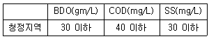
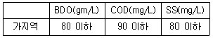
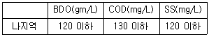
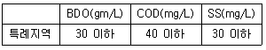
(정답률: 58%)
100. 다음의 위임업무 보고사항 중 보고 횟수가 연 4회에 해당되는 것은?
- 측정기기 부착 사업자에 대한 행정처분 현황
- 측정기기 부착사업장 관리 현황
- 비점오염원의 설치신고 및 방지시설 설치 현황 및 행정처분 현황
- 과징금 부과 실적
(정답률: 51%)
PV = nRT
여기서 P는 압력, V는 부피, n은 몰수, R은 기체상수, T는 절대온도입니다.
주어진 조건에서 압력 P = 2기압, 온도 T = 25℃ + 273.15 = 298.15K, 몰수 n = 40kg / 16.04g/mol = 2492.5mol 입니다.
따라서 V를 구하기 위해 다음과 같이 계산할 수 있습니다.
V = nRT / P = (2492.5mol) x (0.082Lㆍatm/molㆍK) x (298.15K) / (2기압) = 30.6m³
따라서 정답은 "30.6m³"입니다.